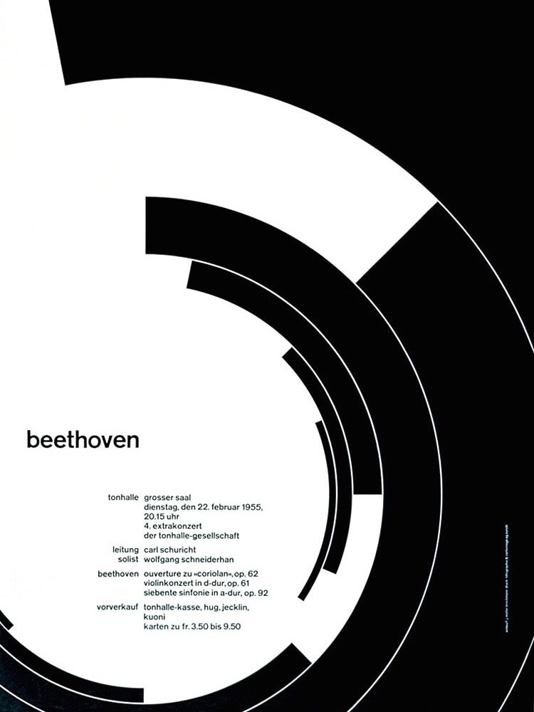

Gaebrielle's favorite artist is Josef Müller-Brockmann.
Below is some of his work:

Gaebrielle enjoys communication design because she loves typography and is interested in the small details.
Family Early Life Interests Favorite Music Favorite Foods Current Life Cool Talent